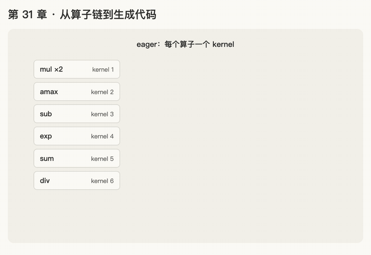

第 31 章 · 读 Inductor 生成的代码：它已经帮你融了什么
本章回答：
torch.compile生成的代码在哪里看？一份生成代码长什么样，怎么读出"哪些算子被融成了一个 kernel、哪些交给了现成库"？什么时候 compile 已经够好、不必手写？
讲解日期：2026-11-15 · 上一章：第 30 章 推理模式与 KV cache · 下一章：第 32 章 Triton 编程模型
对应原文：AISPE ch14 §14.1.4「TorchInductor 后端代码生成」（ai-infra/materials/ai-systems-performance-engineering/docs/chapters/ch14.md第 298–441 行，自动调优第 365 行）、§14.1.8「性能提示和调试生成的代码」（第 552–573 行）、「调试编译器阶段」（第 1029–1108 行）；本章生成代码片段是本机 torch 2.15.0（CPU 与 MPS）实测本章缩写：Inductor = TorchInductor，
torch.compile的代码生成后端；extern kernel（外部 kernel）= Inductor 不自己生成、直接调用的库函数（如 cuBLAS 的矩阵乘）；Metal = Apple 的 GPU 编程接口；全部缩写见 附录 · 缩写与术语表
讲解
第一步：怎么拿到生成的代码（2026-11-15）
三种办法，从省事到详细：
# ① 在代码里直接拿（返回值 + 生成的源码字符串）
from torch._inductor.utils import run_and_get_code
out, codes = run_and_get_code(torch.compile(f), x)
print(codes[0])
# ② 运行时打印
# TORCH_LOGS=output_code python train.py
# ③ 把整个编译过程的中间产物落到磁盘（FX 图、ATen 图、生成代码）
# TORCH_COMPILE_DEBUG=1 python train.py → torch_compile_debug/ 目录
生成的代码是一个 Python 模块：上面是几个 kernel 的定义（GPU 上是 Triton，CPU 上是 C++，Mac GPU 上是 Metal），最下面一个 call(args) 函数按顺序调用这些 kernel 和外部库。
一句话：run_and_get_code 直接拿，TORCH_LOGS=output_code 打印，TORCH_COMPILE_DEBUG=1 全落盘；生成代码 = 若干 kernel 定义 + 一个按顺序调用它们的 call。
第二步：读 kernel 名字——融了哪些算子（2026-11-15）
Inductor 给每个融合 kernel 起名：<后端>_fused_<被融进来的算子按字母排>_<编号>。光看名字就知道融了什么。
实测 1：softmax(x * 2, dim=-1)，CPU：
cpp_fused__softmax_abs_all_amax_eq_mul_ne_sub_0
mul（× 2）、amax（求最大值）、sub（减最大值）、_softmax（exp 和归一化）全在一个 kernel 里。名字里的 abs / all / eq / ne 是 softmax 对"整行都是 −∞"这种特殊情况的检查。也就是说，第 13 章那套"先减最大值再 exp"，Inductor 自动写进了一个 kernel：一行数据读进来一次，在寄存器里求最大、求和、归一化，写出一次。
C++ 的循环体里能看到 at::vec::Vectorized<float>::loadu(..., 4)：每次读 4 个 float，就是 CPU 的 SIMD（单指令多数据）向量化。
实测 2：gelu(x @ w + b)：
extern_kernels.addmm(arg2_1, arg0_1, arg1_1, alpha=1, beta=1, out=buf0) # 矩阵乘 + 偏置：交给库
cpp_fused_gelu_0(buf1) # GELU：自己生成
矩阵乘没有被"融"：Inductor 把它交给外部库（CPU 上是 mkldnn / OpenBLAS，GPU 上是 cuBLAS），偏置顺手用 addmm 一起算了；GELU 单独一个 kernel。这正好对应第 29 章：矩阵乘算力受限，库已经做到极致；GELU 访存受限，单独一趟读写。（GPU 上开 mode="max-autotune" 时，Inductor 会试着用自己生成的 Triton matmul 并把 GELU 融进它的"结尾"（epilogue，收尾阶段），快就用。）
实测 3：同一个 softmax 在 Mac GPU（MPS）上，生成的是 Metal 着色器：
kernel void generated_kernel_0(device float* out_ptr4, constant float* in_ptr0,
uint2 thread_pos [[thread_position_in_grid]], ...)
一句话：kernel 名字列出了被融进去的算子；矩阵乘通常走 extern_kernels 调库，逐元素和规约被融成 *_fused_*。
第三步：读 call 函数——数 kernel、看缓冲区（2026-11-15）
call 是"执行顺序表"，读它回答三个问题：
| 问题 | 看什么 |
|---|---|
| 一共几个 kernel？ | 数 _fused_ 调用和 extern_kernels. 调用的个数 |
| 中间结果落显存了吗？ | buf0、buf1……每个 empty_strided(...) 就是一块要写进显存的中间缓冲区；越少越好 |
| 有没有多余的拷贝？ | aten.clone、copy_、as_strided 之类：可能是非连续输入（第 2 章）或原地修改引起的 |
GPU 上的 Triton kernel 定义前通常带一个 @triton.autotune / triton_heuristics 装饰器，列出 Inductor 自动尝试的块大小（XBLOCK、RBLOCK 等），这就是它的自动调参（AISPE ch14 第 365 行）。
对照表（第 6 章的例子）：
| eager | 编译后 |
|---|---|
sin → cos → mul → sum 4 个 kernel、3 个中间张量 |
cpp_fused_cos_mul_sin_sum_0 1 个 kernel、0 个中间缓冲区 |
20 次 x * 1.01 + 0.01：40 个 kernel |
cpp_fused_add_mul_0 1 个（第 28 章） |
gelu(x + b) * s：3 个 kernel、2 个中间张量 |
1 个，实测快 2 倍（第 29 章） |
一句话：数 kernel 数和中间 buf 数，看有没有多余 clone；Triton kernel 前的 autotune 列表是自动调参。
第四步：compile 什么时候不够、该手写（2026-11-15）
Inductor 擅长：逐元素链、逐元素 + 规约（softmax、norm）、简单的矩阵乘收尾融合。
它不擅长或做不到的典型情况：
| 情况 | 为什么 | 办法 |
|---|---|---|
| attention 这类"矩阵乘 + softmax + 矩阵乘"的整体融合 | 需要分块 + 在线 softmax 的特殊算法 | 用 SDPA / FlexAttention（第 14 章） |
| 输出巨大的 logits + cross-entropy | 要分块边算 logits 边算 loss，Inductor 不会自动改算法 | Liger-Kernel 的融合 CE，或手写 |
| 量化权重的反量化 + 矩阵乘（int4） | 特殊的数据布局和位操作 | torchao 的现成 kernel，或手写 Triton |
| 断图把要融的东西切开了（第 6 章） | 两段之间无法融合 | 先消除断图 |
| 自定义的奇怪访存（gather 后再规约等） | 生成的代码可能不够好 | 读代码、测带宽，不行就手写 |
判断方法就是第 29 章第四步：生成代码里这个 kernel 的有效带宽离硬件上限还差多少。差得不多就别手写。
一句话：Inductor 擅长逐元素和规约的融合；改算法级的融合（attention、融合 CE、反量化 matmul）要用现成库或手写。
动画演示：从算子图到生成代码

可交互版：animations/31-inductor-fusion.html。下拉切换三个例子：softmax、gelu(x @ w + b)、sin → cos → mul → sum。
怎么看：
- 左边是 eager 的算子链，每个方块一个 kernel；
- 播放时 Inductor 把可融合的方块圈在一起（同色），矩阵乘标成"extern（调库）"；
- 右边逐行出现生成代码的
call函数：kernel 名就是本章实测到的名字。
练习与作答记录
题 1：生成代码里看到 kernel 名 triton_poi_fused_add_mul_relu_0。它融合了哪几个算子？（poi 是 pointwise：逐点，即逐元素）
作答：（待作答）
题 2：y = torch.relu(x @ w1) @ w2，默认模式编译后，你预计 call 里有几个 extern_kernels 调用、几个 fused kernel？为什么？
作答：（待作答）
题 3：读生成代码发现 call 一开头有一个 aten.clone 把输入整个复制了一份。可能是什么原因？（提示：第 2 章）
作答：（待作答）
口诀
拿代码：run_and_get_code、output_code、COMPILE_DEBUG；
名字里列着融进去的算子，矩阵乘走 extern 调库；
数 kernel、数 buf、找 clone；改算法级的融合，compile 不会，用库或手写。
本章复习卡片
- P112（拿生成代码的三种办法；生成代码 = kernel 定义 +
call） - P113（kernel 命名规则；实测 softmax →
cpp_fused__softmax_abs_all_amax_eq_mul_ne_sub_0；gelu(x@w+b)→extern_kernels.addmm+cpp_fused_gelu_0） - P114（读
call：kernel 数、buf 数、多余 clone；autotune 列表） - P115（Inductor 做不到的融合：attention、融合 CE、反量化 matmul、断图处）
附录 · 延伸阅读
推荐阅读
| 读什么 | 读哪里 | 读它为了什么 |
|---|---|---|
| ★ AISPE 第 14 章 | ch14.md 第 298–441 行（Inductor 代码生成与自动调优）、第 552–573 行（性能提示与调试生成代码）、第 1029–1108 行（调试各编译阶段） |
本章的完整版，含 Triton 生成代码示例 |
| 官方文档「torch.compile Troubleshooting」 | "Inspecting generated code"、TORCH_COMPILE_DEBUG（〔在线〕） |
所有调试开关 |
| Jason Ansel 等「TorchInductor: a PyTorch-native Compiler」（Dev Discussions，2022） | 设计帖（〔在线〕dev-discuss.pytorch.org） | 调度与融合的设计思路 |
| Liger-Kernel | README「Fused Linear Cross Entropy」（〔在线〕github.com/linkedin/Liger-Kernel） | Inductor 做不到、手写才能做的融合 |
数学原理
本章没有新数学。读生成代码时用的是第 29 章的账：融合后的字节数 = 只读输入 + 只写输出；中间 buf 每多一个，就多一趟"写 + 读"。
公式清单
| 写法 | 意思 |
|---|---|
torch._inductor.utils.run_and_get_code(cf, *args) |
拿生成代码 |
TORCH_LOGS=output_code / TORCH_COMPILE_DEBUG=1 |
打印 / 落盘 |
<后端>_fused_<算子…>_<编号> |
kernel 命名（后端：cpp / triton_poi / triton_red / triton_per 等） |
extern_kernels.mm / addmm / bmm |
交给库的矩阵乘 |
代码对照：把本章的数字用代码算一遍
用 torch 把讲义里的数字跑一遍。代码在仓库本地
pytorch-deep-dive/solutions/chapter-code/ch31_read_inductor.py，配套测试tests/test_ch29_36.py；同一章的 notebook：notebooks/ch31_read_inductor.ipynb（讲解和代码放在一起，一格一格边读边跑）。Mac 上直接能跑，不需要 GPU：
bash cd pytorch-deep-dive/solutions/chapter-code uv run python ch31_read_inductor.py # 一步一步打印 uv run pytest tests/test_ch29_36.py
讲义 ↔ 代码：
| 讲义 | 公式 / 说法 | 写法 | 跑出来 |
|---|---|---|---|
| 第二步 softmax | 整条链一个 kernel | summarize(generated(softmax2, x)) |
cpp_fused__softmax_abs_all_amax_eq_mul_ne_sub_0，向量化 |
| 第二步 gelu(x@w+b) | 矩阵乘调库 | summarize(generated(mlp, ...)) |
extern addmm + cpp_fused_gelu_0 |
关键几行：
_, code = run_and_get_code(torch.compile(fn), *args)
re.findall(r"cpp_fused\w*", code[0])
re.findall(r"extern_kernels\.(\w+)", code[0])
代码里才看得到的 1 件事：
- 同一个函数在 MPS 上生成 Metal、在 CUDA 上生成 Triton：名字前缀不同，规则相同。
自己改一改（不影响练习答案）：
generated(lambda x: torch.relu(x) * 2 + 1, torch.randn(64))，看 kernel 名字。- 把
mlp的 gelu 去掉，看还剩几个 kernel。